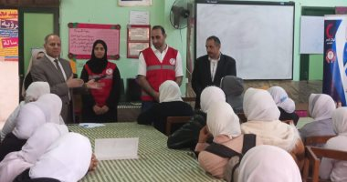

وكيل تعليم كفر الشيخ يتفقد تدريب التأهيل التربوى للمعلمين

وأكد وكيل الوزارة ،أن الحقيبة التدريبية تستمر على مدار أربعة أيام، حيث تناول اليوم الأول إدراك الإطار العام لقدرات المعلمين، وفهم المرحلة العمرية للمتعلمين، و صياغة نواتج التعلم، ويتناول اليوم الثاني استراتيجيات التدريس، بينما يتناول اليوم الثالث التكنولوجيا وتعزيز مهارات التفكير العليا، واستراتيجية إدارة الصف بكفاءة، فى حين يضم اليوم الرابع والأخير استخلاص ملامح التعليم فى ضوء رؤية مصر للتعليم 2030، ووصف منظومة التعليم الجديدة، وتقييم الأداء، وتحسين فعالية منظومة التعليم الجديدة فى تحسين ممارسات المعلم والمتعلم.
وأضاف وكيل الوزارة، أنه بعد انتهاء تدريبات التأهيل التربوى للمعلمين الجدد، سيتم إجراء تدريبات اللياقة الذهنية والبدنية، بالتنسيق مع الجامعة والجهات المعنية، موصياً المعلمين الجدد بالبدء بكل حماس، وتسخير امكانياتهم المعرفية والمهارية لخدمة العملية التعليمية، مقدمًا الشكر لجميع المدربين والمتدربين.
وتحدث مع المعلمين الجدد وحثهم على العمل الجاد في بداية حياتهم المهنية والتأكيد على أن قدرة المعلمين على التدريس بطريقة إبداعية وإظهار مهاراتهم والتأكيد على إظهار القيم الإيجابية مثل الصدق والموضوعية والتعاون والتأكيد على العمل الجماعي.
وتابع وكيل وزارة التربية والتعليم بكفر الشيخ، ندوة عن طريقة التعامل في حالات الكوارث الطبيعية و الحرائق، وكيفية عمل الإسعافات الأولية لكل الحالات المصاحبة من إغماء وجروح وكسور وحروق والاختناق، والأزمات القلبية، بالتعاون مع أكاديمية سينا للعلوم الطبية والهلال الأحمر المصري.
وتابع وكيل وزارة التربية والتعليم بكفر الشيخ، لليوم الثالث على التوالي، تصفيات مسابقة تحدي القراءة العربى على مستوى الادارة، لطلاب التعليم الفني بإدارة غرب التعليميه، بحضور اللجنة المشكلة من كل من عبدالله هنداوى، موجه أول مكتبات، وهالة غازى، موجه أول اللغة العربية بإدارة غرب، وعفاف النجار، رئيس قسم الخدمات التربويه، وإيمان مسعد منسق المسابقة.
كما تفقد وكيل وزارة التربية والتعليم بكفر الشيخ، مدرسة الشهيد محمد عاطف التجارية التابعة لإدارة غرب كفر الشيخ التعليمية ،متضمنه الحجرات الدراسية وحجرات الأنشطة والمكتبة وناقش الطلاب في عدد من الموضوعات الدراسية، كما تفقد المعامل، مثنيا على أداء المعلمين وتفاعلهم مع الطلاب.
ووجه وكيل وزارة التربية والتعليم بكفر الشيخ، الطلاب بممارسة الأنشطة المتعددة، كما وجه المعلمين باكتشاف مواهب الطلاب وتنميتها، وتفعيل الرحلات المدرسية لزيارة المشروعات القومية والأماكن السياحية والأثرية، وذلك لتنمية الوعي لدى الطلاب بما تنجزه الدولة المصرية وغرس قيم الولاء والانتماء للوطن